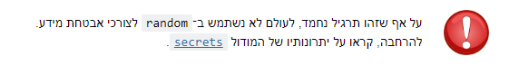

היי,
האם ניתן להשתמש בצורת הכתיבה של לולאת for כפי שמשתמשים בה בקישור שהובא להסבר על מודל secrets?
תודה!

היי,
האם ניתן להשתמש בצורת הכתיבה של לולאת for כפי שמשתמשים בה בקישור שהובא להסבר על מודל secrets?
תודה!
לא.
לא למדנו…
העלו את הנושא כאן בעבר.
זוהי צורת כתיבה שטרם למדנו, ולכן כדאי להשתמש במה שאת יודעת.
ההערה בתחתית התרגיל מתייחסת לכך שבתרגיל צריך להשתמש במודול random, אבל לידע כללי -
בשביל ליצור סיסמאות משתמשים במודול secrets
תודה רבה לכולם!..
האם אתה בטוח בזה? אני הבנתי שצריך להשתמש בספריית secrets

כלומר, בתרגיל השתמשנו ב-random.
בשביל להרחיב את הידע קראו על secrets.
בדיוק. זה גם מגיע אחריו… משמע מצפים לעשות את התרגיל עם הידע שצברנו ואז ללכת ולהרחיב אותו 
זה ממש חשיפה של הפיתרון ועוד בקוד… לדעתי למחוק
אפשר להשתמש ב־flag וזה מגיע מיד למנהלים
תודה
אפשר להשתמש בrandom בנוסף לsecrets?
בהחלט זה בדיוק הפרק להשתמש בדברים האלה.
גם אני השתמשתי ב-for עם range (לא בדיוק כמו שהופיע בקישור ל- secrets, כתבתי את הלולאה עם הזחה וכו’) והבודק האוטומטי כתב לי “הגדרת משתנה בלולאה אך לא השתמשת בו בתוך הלולאה.”
זה flag?
האם להתעלם מההערה?
תוסיף לשם המשתנה בלולאה את התו ‘_’ לפני השם של המשתנה.
לדוגמא:
for i in range(10):
יהא:
for _i in range(10):
לא למדנו את זה, בטוח שפתרון כזה יתקבל?
אני מכירה שלא מוסיפים _ לשם המשתנה אלא מחליפים את שם המשתנה ב-_
כלומר for _ in range(2)...
זה כי המשתנה בתוך הלולאה משמש אותך רק בשורה של הלולאה ואתה לא משתמש בו בתוך הלולאה עצמה.
for i in range(10):
print("Hello")
כמו במקרה הזה, אני מגדיר את i אבל לא משתמש בו בכלל בקוד . דרך לסדר את זה היא להשתמש במשתנה קו תחתון “_” (ללא הגרשיים) במקום ה i זהו משתנה שאומר ל python שאתה לא עושה שימוש נוסף בו.
for _ in range(10):
print("Hello")